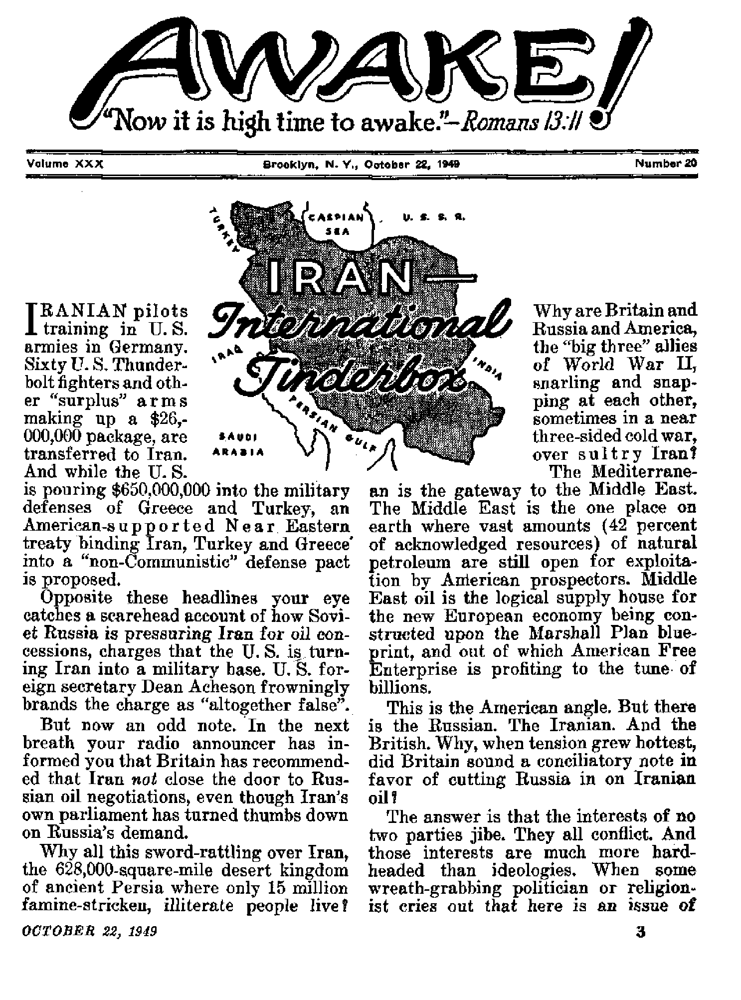
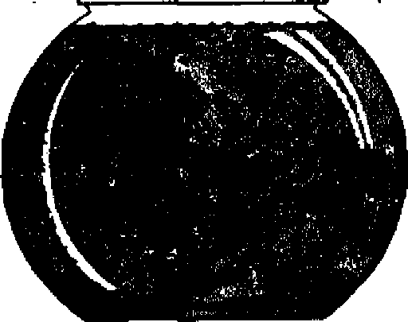
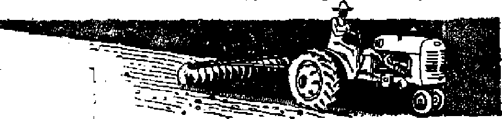
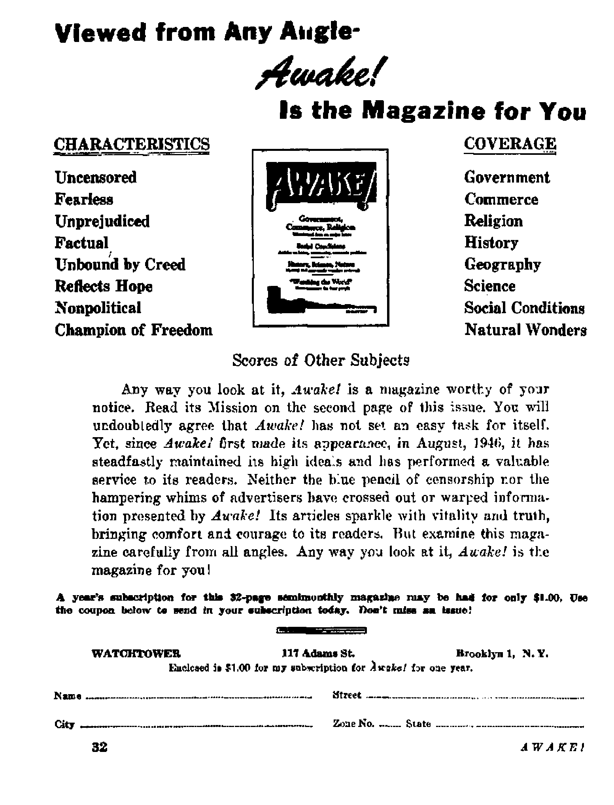

Why do Britain and Russia and America snarl and snap at one another over sultry litde Iran?
Will You Finance Destruction of Freedom?
Count the cost in more than mere dollars before paying for parochial schools with public funds
Mexico Trends Toward the Modem
Changing picture, as the old decreases and the new increases
The Sleep of Death to Be Broken
Scriptural hope for the dead
OCTOBER 22, 1949 semimonthly
THE MISSION OF THIS JOURNAL
News sources that are able to keep you awake to the vital issue* of our times must be unfettered by censorship and selfish Interests* “Awake !” has no fetters* It recognizes facts, faces facts, is free to publish facts. It is not bound by political ambitions or obligations; it is unhampered by advertisers whose toes must not be trodden on; it is unprejudiced by traditional creeds. This-journal keeps itself free that it may speak freely to you. But it does not abuse its freedom. It maintains integrity to truth.
“Awake 1” uses the regular news channels, but is not dependent on them. Its own correspondents are on all continents, in scores of nations. From the four corners of the earth their uncensored, on*the-scenes reports come to you through these columns. This journal's viewpoint is not narrow, but is international. It is read tn many nations, in many languages, by persona of all ages. Through its pages many fields of knowledge pass in review—government, commerce, religion, history, geography, science, social conditions, natural wonders—why, its cover-age is as broad as the earth and as high as the heavens.
“Awake 1” pledges itself to righteous principles, to exposing hidden foes and subtle dangers, to championing freedom for all, to comforting mourners and strengthening those disheartened by the failures of a delinquent world, reflecting sure hope for the establishment of a righteous New World,
Get acquainted with “Awake!” Keep awake by reading “Awake!”
published Semimonthly By WATCHTOWER BIBLE AND TRACT SOCIETY, INC.
117 Adams Street Brooklyn 1, N. Y., U. S. A
N. H. KN OBA, President Gbant Sol tea, Secretary
Five cants a copy One dollar a year
ffanlttMcM ihoUJd be sent to offia In four wm-try in tampliLnre frith rechtetiatw to ptareatee life delinry at mow. BemUtinees ire accepted at Brooklyn from countries where no (office it located, by Internationa] money order cmly. Suboertjrtiou rites tn different countries an here stated in local currency.
Nttln tf ixjlratioo (with renewal blank) le sent at least twc issues Wore aubscriptlcD expires,
Entered u secpnd-dan matter at Brooklyn, N.
Clings nt addreu when ant to cur office may be expected dhetfre within eae month, and your old u well u new address,
Offices Yearly Subscription Bate
AwetiM, U.S., 117 Adame St., Brooklyn 1, N.Y. *1 Aiftrsila, 11 Beresford Ed-, Btrathfeld, N.S.W. «■ Canada, 40 Irwin Ave., Toronto 5, Ontario *1 England' 34 Crme Terries, Landon, W. 2 5a South Africa, 623 Boston House, Cape Town Ba
Act of March B, 1870. Printed In D. 8. A.
CONTENTS
Persian Decline into an Inglorious Pawn
Will You Finance Destruction of Freedom? 9
Demanding “All Possible Concessions”
Mexico Trends Toward the Modern
Purpose of Excommunication Decree
Harmony in Seasoning and Flavor
“The Message Reaches West Norwood”
“Thy Word Is Truth”
The Sleep of Death to Be Broken
whether the Iranian people are to remain free or become enslaved under ruthless Communism, that is sheer babble. The people ofLIran are not and never have been free.
Neither are the Communists concerned about freeing Iran's underprivileged, as reflected in the nature of their demands upon Iran. The concern of Russia and Britain and America alike are well-defined selfish goals; calling it “enlightened” selfishness does not change the fact that if there were not wealth and geopolitical advantages at stake neither country would concern itself with Iran out of pure humanitarian or ideological motives.
From the American viewpoint the main stake is oil, and secondarily airways, and perhaps some currently minor economic aspects. But from the British and Russian viewpoint Iran has for long represented far more than £ fantastically rich oil strike.
Persian Decline into an Inglorious Pawn
Iran, as Shah Reza named it ten years after he rose to power in 1925, is the seat of the ancient world empire of Persia. Since crumbling before the Greeks, the history of that proud and ruthless kingdom of 2,400 years ago has stretched out into one long tale of wars, conquests and invasions, always aimed at one object—exploitation of Persia's natural resources.
All of a sudden, in December, 1943, Iran became the stage for an event of world-wide significance. That was when the fT)ig three” politocrats, Stalin, Churchill and Roosevelt, sat down together in Tehran, capital of Iran, and laid a cornerstone for a United Nations organization to try to establish world peace and security.
A more ironic setting for this meeting, from Iran's point of view, could hardly have been found. Right down to that hour modem Persia had been tracing her decline at the hands of two of the mighty
"peacemakers”, Russia and Britain. Iran for two hundred year®, had been awakening to the unhappy realization that she occupies an area of growing strategic importance to both Russia and Britain. The massive weight of old imperialist Russia had been pushing like a glacier toward the Persian Gulf. At the same time Britain's empire was expanding northward across central Asia toward Russia. In Iran the enveloping influences of both imperialistic powers met. And there they clashed.
The British had gained dominance over the Persian Gulf and in Baluchistan. (Southern Iran lies along the Persian gulf and borders upon Indian Baluchistan.) The Czarist empire had closed down around the Caspian sea, Turkey, and the Caucasian regions. (Iran's northern provinces front upon the Caspian sea, and border the Soviet Union for a thousand miles.) More than once Iran's northern provinces served as a springboard for invasion of Russia's rich Caucasian regions. This fact Russia could never overlook.
A groaning fulcrum under this ruthless seesaw, Iran's strength became more and more hunger-bitten until she had little or no semblance of real independence left by the dawn of the twentieth century. By now a new threat, the German empire, was expanding and threatening to cleave eastward like an* iron wedge, severing the Russian and British empires, through the sinews of Iran. Fearfully the two powers resolved their greed and jealousy in the Russo-British treaty of 1907, and to fortify their holdings they simply whacked up Iran into spheres of influence. Russia took the northern zone. Britain took the southern. They left a precarious middle zone or buffer, with Tehran as its capital, which they gratuitously tendered to the Iranians to call their very own.
Right on up through most of World War I this status remained, both Russia and Great Britain using Iran as a base for operations against Turkish armies, and for a battleground. Then in 1917 the Bolsheviks overthrew the “divine3' czar-and-church order of things in Russia. The^ junked the czar's imperialistic policy, including the Russo-British treaty of 1907 regarding Iran. On February 26,1921, to ward off a treaty between Iran and Britain, the Bolsheviks formalized the Irano-Soviet Treaty of Friendship. It declared null and void all concessions obtained under duress from Iran, stipulating that these could not be relinquished to any other power.
When it is said that the Soviets renounced all Iranian concessions, there must be excepted the Caspian Fisheries. This concession they did not renounce. On October 1, 1927, an Irano-Russian agreement polished and furbished the concession into a novel arrangement, a kind of mixed corporation. With equal Russian and Iranian participation, the board of the company was made up of three Iranian and three Russian members and the office of manager alternated between the Russian and Iranian incumbent. All clauses in the agreement scrupulously granted equal rights to the two partners in fishing. But strangely it seemed to work around to the point where eventually the Russians got the advantages for example, the products had to be sold to a monopolistic Soviet distributing agency.
Iranyrba—Model of Soviet Cartel
It was bad for Iran that the Caspian Fisheries concession was left hanging over her head. Eventually, under pressure of World War II and to counteract a siege of competition of British, Dutch and American oil concerns, the Soviets began to rue the loss of those fat Iranian holdings which the czar had once enjoyed. They decided that they would have to reclaim their oil concessions in northern Iran. They found a loophole of entry in the form of the Caspian Fisheries concession,
The loophole is that the Fisheries corporation is not a mere commercial agreement entered into by two industrial groups in different nations: that would have been an ordinary cartel. Neither is it a concession granted by the Iranian government to a private Russian enterprise. The Russians do not do business that way. No, the Caspian Fisheries concession is in reality a treaty between the two governments, the Russian and Iranian. The two governments agreed to operate a commercial fishing enterprise. That puts every business transaction on a diplomatic basis, where every pound of fish is weighed on political scales. It gives the Soviet government an entering wedge for political as well as economic domination over the grantor country, Iran. This effective and dangerous form of concession is called an Iranyrba,
When, in the midst of World War H, Russia became more determined to get her Iranyrba, Iran hedged. But Iran was also hedging from the British, The Iranians were and still are as suspicious of the motives of the British as of the Soviets. During the War Britain sank Iran's navy, and both British and Russians commandeered practically all Iranian transportation to move Allied military supplies. Iran's internal communications broke down. While grain piled up in some areas, famine spread unchecked in others. One on-the-spot reporter wrote home, “Men died by the wayside as Allied munitions convoys rumbled past.” Britain, at the same time, bought up Iranian wool, hides and other commodities at high prices to keep them out of German hands.
This started a spiral of inflation, which was skyrocketed, when the British and Russians and later Americans paid Iranian workmen wages fantastically higher than they were accustomed to, for rebuilding roads and ports and extending the railroads. Iran's factories meanwhile closed down for lack of raw materials. The country was flooded with paper money- The rich grew richer. The poor grew poorer, if possible. The climax was famine, unrest, internal upheaval, and a tenfold higher cost of living by 1944 than in 1939. Iran had plenty of reasons to distrust the British as well as Russians.
So Iran courted America. It was Iran's idea for American oil companies to horn in and (through manipulating their political lackeys in Washington) shoo off the Russian bear, while muscling in as far as possible on the British lion's share of oil concessions. America would serve Iran as a kind of defense against opposing pressures of both the British and Russians.
It was this scheme that threw a monkey wrench into the whole Iranian fiasco, and gave the issue such a threesided twist.
Russia Seizes Concessions
At any rate, things had come to such a pass by 1944 that the British were high-pressuring for the formation of a proBritish cabinet in the Iranian government. American technical advisers were stationed in Tehran. An American economic commission, representing big U. S. oil prospectors, was dickering for oil concessions. At this point assistant commissar of the Russian Foreign Office, Mr. Kavtaradze, popped up in Tehran and laid down a flat demand for a Russian oil concession in northern Iran.
The area demanded was one in and to which a Soviet company, a British company, hn American company, a French company, a Caucasian middleman, and an Iranian company, all claimed some legal title, on the basis of previous finaglings at some time or other. It goes to show how many irons were in the Iranian fire, and why so much verbal thunder started rolling from pole to pole when Mr. Kavtaradze brandished the hammer and sickle,
Iran recovered from her shock in time to stumble onto a temporary stall. Her parliament, or Majlis, passed a law on
December 3, 1944, making it an^ illegal; act for any government official to negotiate oil concessions and agreements with anyone. This would rule out any secret deals between London and Washington as well as Moscow. Whatever agreements might be made would have to be worked out through the Majlis. And polities being what they are, the Russian proposal could bog down in parliamentary boondoggling and drag out indefinitely.
However, the Soviet bear was not in a mood to haggle. She retaliated, with an act that came as near as anything so far to touching off a third world war. Howl Russia let it be known that if no oil concession granted, no troops withdrawn.
Iran rose up, scared and bristling. The British lion roared. And because it threatened the loss of oil concessions to American Free Enterprise, Uncle Sam blew his high-crowned top. As American ambassador Allen put it, the United States had “dedicated its full energy and. resources to freeing people of the world from fear of aggression”, and Iranians “may rest assured that the American people will support fully their freedom to make their own choice”.
The whole impasse blew up in a smokescreen of confusion when in November, 1945, a revolution, led by a pro-Russian political party, broke out in the northern Iranian province of Azerbaijan. Out of this disturbance was born st new “free” autonomous Azerbaijan, to Russia's liking. Meanwhile the tempo of international sword-rattling, political flamboozle and fire-breathing propaganda increased.
Nevertheless Russia emerged in a bargaining position. She would withdraw her troops, yes—for a price. For oil concessions. They must cover air of the northern provinces of Iran excepting -only a narrow strip of territory in western Azerbaijan bordering along the Iran-Turkish frontier. When Russia did withdraw her troops, on May 9,1946, she held a tentative concession, a very special
Iranyrba ceding the Bear a 51-percent controlling share of the stock for the first 25 years.
But in the wake of this oil grab so much internal dissension was kicked up within the kingdom of Iran, strikes and tribal revolts and all kinds of aggravations caused by reasons known and -unknown, that nothing came of the oil pact In December, 1946, the Iranian army occupied Azerbaijan. The autonomous government was dissolved. The province returned to the control of the Central Government of Iran. And when a new Majlis got around to considering the Russian oil pact, on October 22,1947, Iran boldly rejected the concession.
Russia fumed. She charged discrimination in favor of the British. Since then a barrage of charge and countercharge, sometimes under the diplomatic surface, but generally aboveground, has blistered back and forth, rolling across the international scene.
All this indicates what is going on under the surface of the cold war.
What Is at Stake?
For America: More Middle East oil to supplement the ten-billion-dollar Arabian industry. Iran, tied to Turkey and Greece, and possibly other Middle and Near East countries, would about complete encirclement of Soviet Russia.
For Russia: First of all, if she could nail down her concessionary claims in northern Iran, she would have a basis for the re-establishment of a Russian zone of influence on the Caucasian frontier as in Czarist days.
But of perhaps greater concern to Russia than Iran's oil is the centuries-old determination to thrash her way through to the seap via the Persian Gulf, or, by gaining a' foothold in northern Iran, force Turkey to cede her an outlet through the Black sea.
For Britain:' The strategic Middle East, occupying an area dominating the waterways and land routes linking three continents and controlling world communications ancj trade, is the most single important area in the declining British Empire. “No single factor/5 said the London Times, “is more vital to Britain's status as a great power than her power and prestige in the Middle East/’ Britain's Middle East oil holdings, centering in Iran and covering five-sixths of Iran's territory, represent her greatest and last remaining foreign asset which she cannot afford to lose, nor even share.
For Iran: Traditionally hating her exploiters, both British and Russians, Iran looks to the fool's gold of American support. Iran eyes the golden flood of oil prosperity, some $110,000 in royalties pouring daily into,the coffers of Arabia's king Ibn Saud. She eyes her neighbors, Turkey and Greece, both virtually running on American dollars. She envisions America handling her oil, as well as insuring her national security with perhaps a Greco-Turko-Iranian pact modeled after the North Atlantic alliance. Not that this viewpoint necessarily represents the viewpoint of the ordinary Iranian citizen, who scarcely enjoys such a luxury as a viewpoint, and who may expect to be exploited regardless of who is m charge.
But if it were not Russia, then it would be Britain standing in the way of the dreams of Iran's own despotic rulers. And all the rest stand in each other's way. Iran, an international tinderbox, is a shining and deplorable example of what a once mighty kingdom of this rotten world can come to—a state of dissolution and confusion that can be resolved only by the complete obliteration of all the things that hold its tottering sides together.
The one real hope for the people of Iran and all other nations is that earth's Creator and rightful Sovereign is going to remove all such earthly systems and establish an everlasting Government of righteousness, a hope to be realized by this living generation.—Contributed.
ABOUT the middle of the last century the theory was advanced that plant life in an aquarium provides the perfect balance of oxygen for the fish. This idea, however, was scientifically disproved 18 years ago. Yet, it seems, tropical fish fanciers and schoolteachers still talk about "balanced aquariums”, probably because they think the theory is too good to discard. So says the assistant curator of the New York Aquarium, James W. Atz, in Natural
History magazine.
the carbon
in
the first answer and, if will go
Believers in the theory of interdependence of plant and animal life in fish bowls may challenge Atz’s position with a barrage of questions. Do not fish take in oxygen and give off carbon dioxide, and do not plants take up dioxide given off by the fish, and, in return, give back to the water oxygen for the fish? Did Atz never observe, in a bowl devoid of plant life, fish gasping for air one day, and the next day find the same fish on the bottom, dead? Td question Atz will “yes” and "no”, given the chance, on to explain why both answers are true at different times. By listening to his explanation and gaining more knowledge and understanding of bow plants function, one also learns why fish sometimes gasp at the water’s surface.
<i It is common knowledge that in the process called "photosynthesis” sunlight on the green chlorophyll causes the plants to generate more oxygen than they need, the excess being given off in the water. But it is not generally known that at night, and on dark sunless days when photosynthesis ceases, this process is reversed. At such times the plants actually rob oxygen frani the water for their own use and in turn give back carbon dioxide,
<L On silnny days, when plants are throwing off an excess of oxygen, it is impossible to store it up for future use, because the water holds only 00 much and the rest passes off into the air. On the other hand, if the water has a elight deficiency of oxygen it soon takes up more from the air; so practically at no time is there an under or oversaturation. With carbon dioxide it is a different matter. This gas leaves the water and passes off into the air at a very slow rate; and, therefore, if there are a number of fish in a small volume of water the concentration of carbon dioxide may soon build up to a dangerous point, unless there are plants present to use it up.
So in small fish bowls that have an absence of plant life, unless the water is changed frequently, the fish will be seen gasping at the surface, not because there is a lack of oxygen the water, but rather because of an excess of suffocating carbon dioxide. That this is the case has been proved by placing fish in sealed containers of water having excessive amounts of carbon dioxide. Soon the fish die of asphyxiation, even though there is present Large
amounts of
C From this concluded that goldfish bowl is
oxygen.
it is not to be plant life in a of no value at
all. Its presence is important, but not for the mythical reason assigned- a hundred years ago, viz., to supply needed oxygen. Rather, plants are of value because they use up the carbon dioxide that sluggishly* hangs around the goldfish bowl apparently too lazy to escape to the air.
When the acquarium hobbyist changes his tank’s water or agitates and aerates it he is doing the right thing, not because he is putting more oxygen in it for the fish to use, but because he is removing the excess carbon dioxide that suffocates them. As Atz facetiously observes: "The reason the acquariist gets along so well, even while working under the wrong premise, is that he is doing the right thing— for the wrong reason,” Clear?
Public payment for parochial schools Invites bondage to papal Borne
THE Vatican fight to force all nations to support their schools and institutions has flared up on the American front again. United States radio and press is filled with Papal denunciations of the Constitution of the United States government, which prohibits the establishment or maintenance of a state religion. American princes of the Roman Church abuse and vilify all Americans who support the Bill of Rights. So powerful is the venom of foreign assault that Congress is stopped dead in its efforts to pass a nonsectarian federal aid to education bill; and the compromising elements of the press dub this battle for American institutions a "religious controversy”, or "Squabble”, intimating that Rome's wishes should be placated. This is not a new issue, but merely the "battle of 1949” in an age-old war. While Rome has stirred the United States to fight Communism, it has been left virtually unopposed to crush our freedom safeguards in its own historic way.
The Scriptures declare that knowledge is a defense. . Therefore the sub-verters of knowledge always attack the educational system. The
Nazi-Fascist-Catholic, system and the Communist system compel the indoctrination of the young. Impressionable, youthful minds must receive the totalitarian stamp, Roman or Russian. These systems, as unlike as two slices of Spam, coerce free choice, enchain the powers of reason, halt progress. They both place an iron curtain in front of all contrast-OCTOBER 22f 1949
ing information. Youth must not be permitted to explore, to select, to test values.
In the light of the avowed Roman motives to educate all the world and rule supreme, examination of her opposition to federal aid to education appears calamitous. Within the heart of America not only is a vengeful foreign power the avowed foe of freedom, daily determined to wreck the cherished rights of Americans, but now commands the public to pay for their campaign. It is so outrageous that Americans should be forced to pay for the parochial school education, which teaches contempt for Constitutional freedoms and rots the core of the body politic, that it smacks of a Catholic Inquisition device adopted by their Nazi imitators. This heinous and foul practice consisted of forcing the victim, tortured even at the last moments before officially approved murder, to dig kis own grave.
Finance Your Own Destruction?
It is really too late to warn again of the Roman Papacy's hatred of our public schools, our freedoms, our separation of church and state. When the emissary of a foreign power, Cardinal Spellman, can slander an outstanding American woman, wife ofabeloved deceased president and mother of a popular Congressman, because she opposes aid to parochial schools, and have Americans dismiss the whole affair as a mere "religious dispute”, then evidently strength has been sapped from a free nation. A Roman cancer has eaten out its vitals.
In part this inertia on the part of freedom-loving Americans is the result of the subtle confusion of the issues by Catholic propaganda. They have, for purposes of expediency, resorted to arguments in which they do not believe, to espousing principles for which they hold contempt, and clothed the demand for federal financing of the Catholic Church in the garb of requisition for equal and impartial treatment. “Why,” they vociferate through every public means of communication, the press, pulpit, radio, hall of Congress, “cannot parochial schools, in the name of freedom, have the same support as the public schools? Catholics pay school taxes. Why should they be discriminated against in the disbursement of those taxes? Does America intend to imitate Russia and exclude God from the schools?”
They call separation of chureh and state, which legal American statute declares shall ever be kept apart by an impenetrable wall, a ‘shibboleth” (“pet phrase”) and a “bugaboo”. Using the same language, emanating from the same source, cardinal and priest drum their religion into American ears. Just why any group should set up their own school, in dissatisfaction with the publicly provided school, and expect the taxpayer to support it, does not appear. Being a taxpayer does not carry with it the right to receive government aid for private enterprises. There are many taxpaying Communists, who believe in Communism as much as Catholics believe in Catholicism. If parochial schools receive government subsidies on the grounds that Catholics are taxpayers, could not devotees of the Kremlin, even though they too wish to destroy the commonwealth, require the same aid?
Some goodhearted Americans are impressed by the Hierarchy’s cry for equal treatment. Freedom, equality and impartiality mean something to these good Americans. But many have not been informed or have forgotten that the Roman Catholic Hierarchy does not believe in freedom, equality, or impartial treatment. In America they like to throw the words around to confuse the issue. But in Spain, Portugal and Argentina, where chureh and state are combined, all free dom is smashed with the same animosity practiced in Russia. Over the minds of the people the iron curtain of Catholicism is drawn just as securely. In these countries examples of the “Papal ideal” Protestant churches and schools, besides receiving no government aid, are persecuted almost out of existence. The cry for freedom there has fallen on cold, implacably cruel ears; the Papal wolf has cast aside the Patrick Henry uniform in countries where it is not required for deceptive purposes.
“Pernicious Freedoms”
'Note this excerpt from the Catechism used in all Spanish schools:
Q, What are the freedoms which liberalism defends?
A. Freedom of conscience, freedom of worship, and freedom of press.
Q. What does freedom of the press mean? A. The right to print and publish without previous censorship all kinds of opinions, however absurd and corrupting they may be.
Q. Must the government suppress this freedom by means of censorship?
A. Obviously, yes.
Q. Why? ,
A. Because it must prevent the deception, calumny, and corruption of its subjects, which harm the general good.
Q. Are there other pernicious freedoms?
A. Freedom of education, freedom of propaganda, freedom of assembly,
Q. Why are these freedoms pernicious
A. Because they serve to teach error, propagate vice, and plot against the church,
“Among the thirteen principal errors denounced by the Roman Church are Protestantism; liberalism and Freemasonry.” A catechism bearing the imprimatur (seal of approval) of Cardinal
Dougherty, and used in parochial schools throughout the United States, ^condemns “liberalism”, “separation of church and state/* and requires “heads of states” to “practice the Catholic religion”, “defend it/ and “proscribe all heresy, chief among which is the heresy of freedom”. —January 15,1949, The Nation.
The fight of the Roman Catholic Hierarchy against the American school system is of long standing. It stems from Papal hatred of religious liberty. Pius IX voiced the purpose in his famous encyclical of 1864: <rThe Roman Catholic Church has the right to interfere in the discipline of the public schools, and in the arrangement of the studies of public schools, and in the choice of teachers.” Complying with this command Cardinal Spellman pronounced: ‘“Whatever the Popes have taught, or shall hereafter teach, must be held with a firm grasp of the mind, and so often as occasion requires, be openly professed.” Union of church and state are called for as requirement. Numerous Jesuit publications denounce the American school system. The reason again is aptly put by an April, 1948, pronouncement by the official Jesuit organ Civilta Cattolica: “The Roman Catholic Church, convinced through its divine prerogative, of being the only true church, must demand the right to freedom for herself alone, because such a right can only be possessed by truth, never by error. As to other religions, the church will never draw, the sword, but she will require that, by legitimate means, they shall not be allowed to propagate false doctrine. . . . The (RC) church will require for herself all possible concessions, limiting herself as accepting, as minor evil, the de jure toleration of other forms of worship” only in such instances where, as in America, she cannot destroy opposition.
Demanding “All Possible Concessions99
Obviously truth does not require such protection and concessions. The idea that truth is a fragile flower, requiring "hothouse” cultivation, is the product of perverted minds. On the contrary, error is the night-loving growth that cannot bear the sunlight. The foremost exponent of the truth, Jesus Christ, rebuked His disciples when they asked if they should call down the fire of heaven upon opponents: “The Son of man came not to destroy souls, but to save.” (Luke 9:54-56, Douay) Only an enormous organization, founded upon falsehood, requires the greatest possible precaution against exposure..—John 3:19,20,
This Cardinal Spellman proposes to have. The latest outburst was provoked by the House of Representatives Graham Barden bill. The Barden bill recently was bottled up in the House Labor Committee, by reason of Catholic instruction to its Catholic chairman, Lesinski. After Papal instruction, Congressman Lesinski declared that "as long as I draw breath” the Barden bill will not come out of the committee. The subcommittee, headed by Barden, favorably reported on the bill 10 to 3. At this writing it seems slated for oblivion, like so many other federal aid bills that do not favor the religion of Rome.
Again state aid for impoverished states like Mississippi, Georgia and other southern and southwestern sections, where the amount spent for classroom may be only 1/60 of that spent in prosperous states like New York, has again been blocked. While the agents of the Vatican went into scheduled tantrums throughout the country, denouncing Barden and associates as “apostles of bigotry** and "disciples of discrimination” (Spellman), a Catholic on the same committee (labor and education) remained cahn. Representative Andrew Jacobs, an Indianapolis Catholic, contends that "many Catholics disagree with Cardinal Spellman”.
Commenting upon the feature of the $300,000,000 Barden bill which burst the ire of the Hierarchy by restricting aid to public schools. Congressman Jacobs pointed out: “As long as we have the same right to send our children to public school as anyone else we are not dis-CKtminated against. As Catholies we do not have the right to a separate publicly supported school system, nor does any other group have such a right. ... I cannot and will not support any measure that grants public financial aid to private or parochial schools.” Jacobs reasonably contends that if parochial schools are turned into public schools they no longer serve the purpose for which they were created.
Farrnus Views
Non-Catholie organizations throughout the country took either the Eisenhower view that no federal funds should be given to schools or that funds should be restricted to public schools. A radio newscast of August 11 stated that a new education aid bill was in preparation in the house for appropriations to pay salaries of teachers in public schools only. If the Hierarchy’s veto follows the strategy, pursued at least, since 1937, of opposing every bill that does not favor Catholic institutions, then this effort is headed for extinction.
Sober minds voice objections to even federal aid for public schools on the following grounds: (1) Congress has nothing to appropriate except money or wealth levied from the 48 States; (2) “We have taken a good look at federal dollars and find that they all lose weight on their journey to Washington and back home again”; (3) federal funds for education carry with them imminent threat of increased bureaucracy, federal control, politics in education, “paternalism,” and “socialism” (Eisenhower). Timely also is the warning of Hoover showing that at present one in every seven citizens is a recipient of government finances, that ffMr. Average Working Citizen now must work 61 days a year to support local, state and federal governments.
Proposed additional government spending would take another 20 days’ work.”
At present 38 of the 48 states have constitutional prohibitions against distribution of funds to private or parochial schools. The McCollum case, decided by the Supreme Court, was adverse to “religious instruction”, Dakota ruled against religious garb in public schools. A recent decision in New Mexico forbids use of public funds for parochial school books, which had been practiced. A ruling of the attorney general (Clark) doubts the validity of “released-time” programs in Wisconsin. Iowa has ruled against use of buses for parochial schools; while Washington’s State Supreme Court also decided against the religionists. However, in New Mexico, Connecticut and elsewhere the Romanists are receiving “abundant concessions”. A conclusion of this brief review brings to mind the ringing charge of Methodist Bishop Oxnam, repeatedly defamed for his stand against parochial school aid: “Any one who disagrees with the cardinal (Spellman) and who objects to the hierarchy putting its hands in the public treasury is a bigot.”
Each generation is fooled by the suave claims of the Romanists. They cannot read disaster in the wrecks of other nations which gave Rome’s religionists free hand. When the gnawing rodents of Papal liberty-haters have riddled our constitutional safeguards thhy will not be rebuilt by men. It is our last human fortress against slavery. But'break the, dam, cut away the supports, and the victorious Papists will laugh at the credulity which led many to believe their fair speeches and innocent-sounding vows of good intention. Let this be repeated, even if in vain: Any concessions made to the Papal power will be used against this land. And any hand of friendship lent to Papal aggressions will be destroyed by Jehovah when He sweeps back their refuge of lies to their utter annihilation at Armageddon.
MEXICO is a paradox: at one and the same time she is both ancient and modern. The Mexicans point with pride to their ancient civilizations long antedating the coming of the Europeans to the Western Hemisphere. They speak of the succeeding civilizations of the tribes known as the Toltecs, the Mayas and the Aztecs. They produce in evidence the various pyramids and temples, the ancient systems of chronology and astronomy, and the huge stone sundial, said to have been used to compute accurately the times and seasons.
Many of the descendants of those ancient tribes still live in Mexico, speaking the old dialects and practicing many of the ancient arts and religious traditions. The distinctly Mexican Indians, who form two-thirds of the population, still live in an agricultural handicraft civilization. Most of them are very poor, and their means of livelihood are very primitive. Much of their clothing is homemade; indeed all of their handiwork reveals an art that has not been lost. Necessity has decreed that their handiwork must always be a thing of utility, but at the same time it must reflect the beauty of their distinct creation.
Only a short trip in any direction into the country gives one the impression that Mexico is still bound to the past. Here the most primitive farming methods are still used. The North Americans may speak of the ‘"horse and buggy” days as an epoch of the past, but Mexico is still in the days of the oxen. Yes, oxen are extensively used on many farms. It is an interesting sight to see the oxen pulling the ancient crooked stick called a plow, slowly lumbering along while the cam-pesino, the farmer, screams and dirges OCTOBER 22t 1949
WMV
the lazy oxen to get along. But the good old oxen are not easily persuaded, for to them there will be another day, a mawami.
Ancient planting methods still prevail. Some of the best corn is raised on steep hillsides, too steep to cultivate except by hand. At seed-planting time the farmer crawls along the upper side of the steep incline and with a pointed stick pokes a hole in the ground. The kernels of corn are dropped into the holes and are covered up. Then, all the farmer does is wait until harvest time to gather the crop.
Another common sight is the little scraggy, sleepy-eyed burro. It can truly be said that the Mexican and his burro are as inseparable as lovebirds. The lowly burro is the poor marts burden-bearer, used for a hundred and one different things. In the absence of the donkey it is no uncommon thing to see both men and women carrying large jars of water on their heads and backs for long distances from the water holes to their adobe and grass huts on higher ground. On their way to market one may see them trotting along for miles carrying their produce in large baskets supported from their heads by straps and ropes.
This picture gives only a hint of how ^Mexico is tied up with the past. Can she continue to escape the penetrating rays of the sun of modernism? Can she continue to live in the past and defy all trends of this modern world to take her place among the civilized nations?
The Changing Picture
The answer is found in the trends of other nations whose background is very 13
similar to that of this nation. Tn this fast-moying age, no nation can long resist the encroachments of our so-called "modern civilization”. Yes, Mexico too is trending toward the modern. She is measuring her stature; she is slowly but surely finding her place in this modern world. As the giant bulldozers are forcing open new highways of traffic throughout the land, so Mexico is forging ahead to open up ways for modern living, modern means of transportation, modern schools and hospitals, light and power plants, vast new irrigation projects, and modern industrialization in general.
Id further proof, her leaders cite the fact that Mexico is and was one of the original members of the United Nations organization, holding important positions in its superstructure, such as the UNESCO, trade councils, etc. They point with pride to their modern cities with their broad paved avenues; their ultramodern apartments, office buildings, and hundreds of up-to-date cines or moving-picture theaters. One look into her densely moving auto traffic reveals that there are found the shiniest, classiest automobiles in the world, such as Buicks, Cadillacs, Lincolns, not to mention every other make of car now being produced. Mexico is tied to all parts of the world by airplane passenger lines, besides the many lines shuttling across the nation.
Let us look for a moment at the physical aspect of Mexico, It is not a small land as far as area is concerned. It contains 765,537 square miles of territory, equal to that portion of the United States lying east of the Mississippi river and south of the state of New York. Its length, as traversed by the paved PanAmerican Highway from El Paso, Texas, to the Guatemalan border measures 3,500 kilometers, or 2,188 miles. Within this vast area are found untold mineral riches consisting of gold, silver, petroleum, copper, tin, sulphur and manganese. Due to lack of proper equipment theae resources have been poorly de* veloped.
The population of Mexico is now about 23 million inhabitants. To the average foreigner who has never visited this land Mexico is made up of lazy people, "peons”, fast asleep under a cactus, deep in the shade of their huge sombreros. But this is not true. The Mexicans, as a whole, are a hard-working people, capable of making progress when given the proper means and assistance. Lack of technical skill has been a' handicap to the more rapid development of the country, but this lack can in no wise be attributed to laziness.
Land Reform
From time antedating the Spanish conquest of Mexico, its people have been intimately associated with the land. They are predominantly a pastoral or agricultural people. Their search for arable land and their struggle for it has been the impelling motive for the growth and development of Mexico. Of the total land area of the nation only about 8 percent is tillable, due to the extensive mountain and desert areas.
In the first decade of the twentieth century the land was owned or controlled by only a few persons. There were thousands of peasants without any land at all. Large numbers of them were without work, because the large landholdings were poorly managed and poorly worked; consequently there was not work enough for the day laborers. This led to great dissatisfaction on the part of the peasants, who by now were clamoring for justice in the way of land reforms. So, the revolution of 1910 was in fact due to the economic discontent of the peasant classes.
From time to time some attempts at land reform were made, but the strongly entrenched interests resisted such changes; sot not until the presidency of General Obregon was reform carried out with some vigor. However, trader President Cardenas, who is jpart Indian, the Reform Laws reached their maximum expression. The Agrarian Reform is not yet complete; it is m process of development.
The federal government recognizes the need of reforming farming methods. This requires much education of the farmers in practical methods in order to improve the soil and to increase acreage income. For example, vast stretches of farming land is destroyed annually by wind and rain erosion. Other factors contributing to the poverty of the Mexican farmer is the lack of rainfall in certain areas, total ignorance of the value of crop rotation, antique farming methods, and the continual impoverishment of the soil without addition of fertilizer. All these factors have kept Mexico a backward nation, whose subsistence standard has been much below that of many other nations.
The government has established some model farming districts in parts where irrigation has been developed. In these districts are’ being employed the latest type of farm machinery. Modern methods are being demonstrated, that is, how to rotate crops, fertilize the soil, to know what crops are best adapted to each community, how to harvest and market the crops, and many other details. It is said that these practical demonstrations are infusing new life and hope into the farmers.
The principal diet of 16 million rural Mexicans consists of corn and f ri jo les (beans) of many varieties. The majority of Mexico's 23 million people eat tortillas, which are made principally of ground corn. Mexico never has been able to produce enough corn to make sufficient tortillas for her hungry population. The reason is that for generations the farmers were content to raise corn which grew only a foot or two in height, bearing ears about two or three inches long and with no more than forty kernels to the ear.
Only recently has progress been made in this respect through the efforts of the Mexican Corn Commission created by President Aleman in 1947. Through proper selection, breeding and planting of corn, the nation has enormously multiplied its 'production. Truly a miracle has happened. For the first time in 1948 Mexico did not need to import corn for local consumption. The 1949 yield is expected to be about 2,750,000 tons, ample for all needs. Thus by practical education and application the farmers are "catching on" to new methods and processes of production, adding much to the nation's well-being.
More Proffreaa
Great progress has been made in connection with the textile industry. Modern factories are springing up in all parts of the country. Not only have textile factories sprung up, but also factories producing practically everything needed are to be found, to mention principally clothing, shoes, leather goods, furniture, steel products, petroleum products and canned goods. It can readily be seen that vast numbers of native Mexicans are learning mechanical and technical skills, resulting in better living standards.
The aim of Mexico's best administrations during the past forty years, including the present regime, has been to elevate the extremely reduced economic condition of the population. Mexico has had to return in a degree to the policy of inviting foreign capital and technical skill to come to Mexico in order to develop her vast potentialities. As a consequence, many enterprising industrialists are establishing a variety of factories. Many skilled engineers have come to direct the construction of huge dams and immense irrigation projects; to install electrical generating plants for light and power; to probe the earth and sea for new supplies of oil. Through the aid and co-operation of these foreign engineers, native Mexicans are learning the technique of how to develop and conserve tlie vast resources of Mexico.
Mexico's progress has been impeded from time to time by floods, disasters and plagues. One of the greatest blows came about two years ago when the plague of aftosat or the hoof and mouth disease, struck the livestock industry, even to the* one or two cows of the lowly campesino. Milch cows and beef1 cattle were hardest hit. This called forth the best efforts of Mexico's scientists to combat the plague, but also the U. S. sent her best-informed veterinary doctors to cooperate in cheeking its spread. Millions of dollars have been spent in the eradication of the disease among livestock, but to date it has not been completely exterminated. 9,390,864 head of major cattle had been vaccinated up to April 23, 1949, by the joint Mexican-United States Commission.
An interesting incident arose in connection with vaccination work when the commission decided that all clovenfooted animals in the Mexico. City zoo would also have to be vaccinated. It seems that all went well with the more timid varieties, such as the deer; but the story runs differently when the time came to vaccinate the American buffaloes. The newspapers gave out the following headline: *’* Buff aloes Buffalo Commission Vaccinators.” The story follows :
The battle against foot-and-mouth disease reached the zoo yesterday, but a pair of wildeyed American buffaloes won the first skirmish by routing nearly fifty humans, consisting of zoo attendants, inspectors, vaccinators, commission officials, photographers, newsmen and miscellaneous spectators. A shaggy-maned 3,000 pounder took one look at the approaching delegation and decided he didn't like what he saw. The crowd's advance slowed visibly and went into quick reverse when the giant bison took off in a headlong charge. No one remembers very well how he got out of the corral, but apparently everyone did, leaving the buffaloes in undisputed possession. The last word on the matter is that “Operation Buffalo” has been temporarily suspended.
One would be considered derelict in not mentioning Mexico's advances in two particulars that vitally affect the whole nation. That is with respect to public health and education. Public health has been one of Mexico’s gravest problems, but now hospitals and health clinics are being established, and free medical aid is being made available to the poor. As to public education, great advances have been made during the past decade. Since illiteracy has been so prevalent, the magnitude of the task is very great. The importance that the government attaches to the fight against illiteracy is vividly reflected in its budget figures. Public education expenditures ranlr third in this year's budget, coming after the public debt and communications and public works.
Viewing the matter as a whole it can be seen that Mexico is making a noble effort to progress. Her problems, as are those of all nations, are perplexing. To continue her present course calls for all the ingenuity, honesty and labor that all her people can possibly put forth. But she is emerging from the past. Her progress is steady. She is leaving behind the musty shadows of her ancient pyramids, and traditions of her tribal ancestors, and unitedly as one people she is marching forward. Her progress may be slow, but truly Mexico is trending toward the modern.—Awake/ correspondent in Mexico,
ACCORDING to scientific hypothesis, man’s first home was a cave from which he had driven out the animals.' “The first step toward housing himself was taken when the Neanderthal man drove the wild beasts out of the caves and took possession himself[Encyclopedia Americana, “Civilization” subtitle “Building and Architecture”, VbL 7, p. 22) According to the same authority this event occurred about 20,000 or 25,000 years before the Lord created the first man. Bible chronology sets the creation date as 4026 B.C.
Mythically fabricated by irreverent man, the existence of the “prehistoric inhabitant” may be as quickly dismissed as that of the fairy godmother or Santa Claus. Probably the discovery of some ancient people’s ‘Take-huts”, or cavern homes, dwellings almost identical to which, are still occupied in parts of even the “civilized” world, led the ethnological visionaries to certain wild conjectures involving millennium-jumping. Contempt for the Bible account, which alone dovetails all harmonious explanation, seems to be the rule with scientists.
Blithely skipping over this manufactured interval of human occupancy, the scientist is amazed at the “epoch-making” creation of kiln-dried bricks in the Euphrates valley, dated about 5000 B.C. Turning now to the only reliable source of historical knowledge of early ipan, the Bible tells of the construction of the first city, named Enoch, and built by Cain, approximately 3900 B.C. (Genesis 4:16, 17,25; 5:3) Knowledge of building was much advanced by God’s instruction to Noah for the ship 450 feet long which weathered the flood in 2370 B.C.
1 'IIKa
A hundred or two hundred years later another construction was attempted in which Noah had no part: tower or Babel erection which Jehovah halted (Genesis 11:4, An Amer. Trans.), employing kiln-dried bricks and pitch or bitumen for mortar. Egypt, with Jewish slave labor, built masonry cities (Exodus 1:11-14), From these recorded facts it may be surmised that houses of brick, stone and wood were built very early after man's creation, and did not wait tens of thousands of years while he was supposedly losing his tail and learning to talk.
From the description of a leprous house at Leviticus 14:34-50, in which timbers, plaster, stones and mortar are mentioned, it seems certain that housebuilding was an advanced art in Moses* day, 1500 B.C. Lime, still used for mortar, was employed from early times. (Isaiah 33: 12) On top of the flat roofs, the building of a battlement or three-foot wall was required by law, its purpose being to prevent accidental falling. (Deuteronomy 22:8) Davis’ Dictionary of the Bible says that the poorer homes had roofs, of “branches of trees, canes, palm leaves, etc., covered with a thick stratum of earth”. In the single-room houses of the poor the family dwelt on a raised platform, the lower portion occupied by the cattle. Along the sides of the platform the cattle feed troughs were arranged.
The house of Palestine and the Middle East was admirably adapted to the mild, dry climate. The
roofs were invariably flat and thus ao commodated a number of useful purposes: drying fruits and flax (Joshua 2:6); walking about for observation or relaxation, likely also for drying clothes and bathing (Daniel 4:29, An Amer, Trans.; 2 Samuel 11:2); for conferences (1 Samuel 9:25, 26); for righteous meditation and prayer (Acts 10:9), as well as misused for idolatrous demon-worship on occasions* (2 Kings 23:12; Jeremiah 19:13; 32:29; Zephaniah 1:5) In fair weather the people slept on the roofs, while during the feasts of tabernacle the Jews built booths of branches on top of the roofs. (2 Samuel 16:22; Smith's 'Bible Dictionary, “House”)' In Jesus' day it was used for preaching. —Matthew 10:27; Luke 12:3; Acts 20:9.
The roof was reached by an outside stair. In the better homes, the rooms were arranged about a central court, in the center of which a well or fountain might add decoration and convenience, (2 Samuel 17:18) In this type of home the stairs to the roof usually ran up from the inner court. Important also to the oriental house was “the upper room” or “summer house”. This addition was entered from the flat roof, which formed a sort of delightful terrace similar to that of the modern penthouse.
At Judges 3:20 this upper room is referred to as a “summer parlour” in the Authorized Version, but a modern English version, An American Translation, more descriptively calls it a “cool roofchamber”. After killing fat Eglon, Ehud escaped over the terrace or porch. (Judges 3:23, Am,. Stan. Ver.) Opening on what was probably a landscaped terrace, the upper room was delightfully popular in summer. (Isaiah 37:27; Amos 3:15) It is understood that such an upper room, frequently reserved for guests, was provided for the “last supper”. (Luke 22:12; Acts 1:13; 9:37; 20:8) As distinguished from the summer house or upper rooms, the rest of the house was often called the “winter house”. (Jeremiah36:22) No chimneys were provided in these homes, the heating being done by braziers or open hearths in the court.—Jeremiah 36:22; Luke 22:55.
Palaces and finer homes were not necessarily as simple as the description might suggest. Trees and gardens might decorate the courts; inner verandas opening on the courts supported balconies for second and third stories; windows screened by lattice furnished excellent observation points from which not a few, such as Jezebel, suffered fatal falls. (2 Kings 9: 30-33) But always the Eastern house remained a flat-roofed, utilitarian structure, generally made of materials easily available, and well suited to the climate and needs of the people.
Primitive Homes
Among the more humble peoples, whether they be Indians of the Americas, Micronesian or Polynesian of the South Pacific, African jungle-dweller, or Chinese coolie, the basic building materials have immemorially been wood and earth. Wood makes the sampan for both home and mode of travel for many Chinese and Malays; roof and supports for the conical domes of the Mangbattu of northern Belgian Congo, and for the “rondhovels” of South Africa. Plaited or openly interwoven limbs thrust into the ground for wind resistance make the framework of the hemispherical hut of the Bantu (South Africa). Wood is the chief material for the graceful, concave-roofed,-turned-up-eaved, brightly painted houses of Japan and China, The ancient "lake-dweller” set his home upon stiltlike piles, accessible only by boat. Thatched roofs, and waffs of “wattles (twigs) and mud”, are common even in England today.
The igloo of the American Eskimo is usually made of planks and turf in Alaska and the West; and of stone and turf in Greenland, Only in the central region of Canada's territories is it generally a “snow house”. The igloo is entered by a funnel-shaped opening, just large enough on the outside to crawBthrough, often partially underground, A central hole in the roof, covered by seal or other animal gut, permits smoke from wood fire or seal-oil lamp to escape. Occupants sleep around the walls. The eskimo stays at home in winter; but in spring he does not have any FHA payments to worry about, if he deserts this house to seek walrus, seal or fish in his kayak.
Indian lore and stories contain the words <£wickiup”, “tepee” and the more familiar “wigwam”. The latter term usu-ey applied to the arched-top rectangu-' huts as well as the conical tepee more familiar in the West, The hufs wood frame was covered with rushes, bark or skins. The tepee was supported by a central pole, and on the lean-to poles skins were fastened. Centuries before the Israelites had made tents of woven goafs hair and having a variety of shapes. Cruder still was the Indian hut called a “wickiup”. However uncomfortable may have been these simple shelters, the modern American, laden with heavy monthly payments and burdened with taxes and mortgage, may sometimes yearn for the uncomplicated tepee.
Better construction was that of the “village” of Pueblo Indians, The typical pueblo is a many-celled, communal; defensive structure of several stories, opening on one or more courts or plazas in which dances or other ceremonies are performed. They were built on plains, lofty mesas, and in natural recesses in the rocky walls of cliffs or canyons. Some of these were semicircular at the ground level; while, above, five or six tiers of “successively retreating” dwellings reared upward. Arrangement was such that the roof of the lower dwelling formed the “front yard” of the home above. The ground dwellings might have access by means of a removable ladder, and for defensive purposes openings were mere chinks.
Construction was of sandstone; mortared together with adobe to make a wall so straight and strong that many have endured for centuries. Pise or rammed-earth construction was also employed; but the molded adobe brick, now so commonly used, was not known in preSpanish times. Still farther advanced was the architecture of the Aztec and Mayans, but which (Joes not fall within a classification of primitive house-building.
Cave-dwelling is still practiced throughout southwestern Europe, parts of Asia and Africa. Since ancient tunes, caves have served both for abode and as places of refuge. When Joshua defeated the Amorites five kings hid themselves in the cave at Makkedah; David took refuge with many others in the cave of AduUam; while Obadiah hid the prophets sought by the murderous Ahab, in a cave large enough to hold fifty at a time. —Joshua 10; 1 Samuel 22:1,2; 1 Kings 18:4.
Up until modem times caves have furnished refuge to Christians, as the Italian catacombs, and for beleaguered or desperate refugees in the wars of western China, Afghanistan, and even during the first world war when whole regiments were concealed in subterranean chambers north of the Aisne. In the limestone country of France, particularly in the valleys of the Loire, Dordogne and Garonne rivers, where, deep gorges have been cut out by centuries of flow, many caverns have been enlarged and excavated for human habitation whose beginnings lie obscured in antiquity, and still furnish domicile for poor people. An absorbing picture of the activities of cavern-dwelling armies during the uprising in Brittany (1793-96) is related :
The subsoil of every forest was a sort of sponge pierced and traversed in all directions" by a secret highway of mines, cells and galleries. The underground belligerents lurking in these hovels under trap-doors were kept perfectly informed of what was going on, and would spring up under the feet, or just behind the heels of their ambushed f oes. Hugo asserts that in Isle-et-Villaine, in the forest of Pertre, not a human trace was to be found, yet there were collected 6,000 men under Foucard. Tn the forest of Meullae, in Morhib&n, not a soul was to be seen, yet it held 8,000 men?
These refugees whose entrances were hidden in thickets, in cellars, and under churches, concealed many Frenchmen -in both world wars.
Holy Austin's rock in Shropshire, a mass of red sandstone, is honey-combed with habitations, whose neatly framed doors are cut through the rock' wall left for a front, and which houses even now are greatly liked by tenants. In the “chateau country" near Tours regular fronts serve as entrances for inhabited caverns; and while many of these eaves are occupied by poor, even degraded people, some are “decently furnished, and ornamented outwardly by ledge gardens, hanging vines, and neatly curtained windows".
Dishonest contractors and builders, red tape and outdated building codes, construction material post and scarcity, housing shortages and high rent and higher taxes may force men to again drive the animals from their cave-dwellings. This, however, will likely not happen. Man will return to his original home, but that was not a dark, dank cavern. In Jehovah's new world man will live in an earth-wide garden of Eden, dwelling in a beautiful home of his own. —Isaiah 65:21,22.
‘Purpose of Excommunication Decree
Washington, July 24—Although it reads like something out of the Middle Ages, the decree issued by the Congregation of the Holy Office excommunicating Communists and their supporters is not to be treated lightly. * . . The director of the Sacred Congregation of the Holy Office told a New York Herald Tribune correspondent “the idea that Catholics could he Communists had spread so far that some Italian Communist party clubs displayed crucifixes on their walls and some Italian Communist leaders insisted on carrying religious objects in Catholic Church processions.” . . . The Communist parties, it is worth noticing, are strongest where the Church has been most powerful. The size of the Communist party in „ Italy is a testimonial to the misery, poverty, ignorance and squalor developed in generations of misrule by feudal aristocrats, big landowners, rich industrialists and brutal Fascists—none of whom the Church ever excommunicated. The size of the party in the mother country of the Roman Church should show all but the willfully blind how fantastic is the notion that it is a bulwark against Communism. If the priests couldn't keep Italians from becoming Communists, all thia new decree will do in the long run is to keep them from remaining Catholics.
The danger is not in the West but in the East, where Slavic suspicions of Rome and a desire to uproot feudalism have brought on the same kind of war with the Church that occurred centuries ago in England and France. The Church has steadfastly proclaimed its opposition to “materialism”, but in Eastern Europe as in Plantagenet England it is the loss of church lands and revenues that have stirred it most deeply. No hope of East-West trade in souls moderates its fury, and the Church is the one major European institution which wants no cessation of the cold war, its one hope of reconquering Baltic and Balkan territories the Jesuits once recaptured for it in the Counter-Reformation. The excommunication decree must be read with the bitter speech made by Bernard Cardinal Griffin in England July 10 denouncing, his government for "short-sightedness” in reviving trade with the Soviet sphere. The decree is not to be dismissed as an anachronism. It is a step in building up public opinion, especially in America, for a war to recover the Eastern lands for the Church.—Columnist I. F. Stone, in the July 25 N. Y. Daily Compass.
I
this is good for the cook to know, but, since there are over 2,000 herbs, spices and seasonings that
L T how, mother
JJ dear?’’ asked confused and nervous Dorothy, who was engaged to be married.
She was getting last-minute instructions in the art of cooking. My! how she wished she knew the secret of seasoning food with those strange herbs and spices that made her mother's cooking famous. Right there she made up her mind that she would never cook like the average wife. She would learn all she could from her mother. She would read and study up on herbs and spices and would apply herself.
In studying the fundamentals of flavoring and seasoning she learned that the palatability of all foods depends on five things: texture, appearance, temperature, odor and flavor. Above all, the food must have the proper aroma and taste for the coojdng to be a success. Smell and taste are so closely associated that it is difficult to tell where the aroma ends and the flavor begins. Hence, the flavor of a food is often improved when actually only its aroma is enhanced by the use of spices and herbs. But, like perfumes, seasonings and flavors that are added must be sly and subtle, rather than crude and rough, if they are to capture admiration and praise.
Herbs and spices are individuals, each having a character of its own. Some, like clove, if given half a chance dominate the field over other spices. Otljers form good companionships, as, for example, nutmeg and cinnamon or nutmeg and allspice. Others do better alone. Salt, neither a spice nor. an herb, is a selfsacrificing individual that is willing to lose its own identity in order that the food surrounding it may benefit All of come in the form of roots, stems, barks, leaves, flowers, seeds, fluid extracts, oils, liquids and powders, it is very confusing for beginners. As she went along, Dorothy solved the problem by putting bits of information on herbs and spices in a looseleaf notebook, and it is from' these notes that the following is taken.
Notes on Herbs and Spices
Allspice resembles in flavor that of blended cinnamon, nutmeg and clove; hence the name. The whole berries are used in soups, sauces and in seasoning of meats ■ the ground variety is used in baked goods, puddings, jams, ketchup and sausages.
Anise is used to flavor liqueurs, cakes and cookies.
Basil may be used in spaghetti sauce, or sprinkled on tomato soup or creamed potatoes, or combined with cream cheese as filling for tomatoes. Is excellent in green salads or in scrambled eggs. Sweet basil has a clove-like flavor and in cooking is used in the same way as thyme and savory.
Bay leaves, also known as laurel, are useful in soups, meats, stews, hash, stuffings or in pickling.
Caraway seeds, used a great deal by the Hungarians, a favorite on rye bread and cookies, merge their flavor with other herbs in soups, cheese and cabbage dishes, and shrimp salad. Try them on fried potatoes, or sprinkle a teaspoonful of the seeds over the top of an apple pie before covering with the crust.
Cassia, or Chinese cinnamon, is a great favor* ite in puddings, French toast or fried bananas. Delightful if sprinkled on ham before it is baked.
Celery salt, common in soups, is more un-
usual when sprinkled on tomatoes or hamburgers.
Chervil has a milder flavor than parsley, is more agreeable than fennel, is more aromatic, and is excellent in soups, salads and sauces, or for garnishing purposes,
Chili powder is not limited in use to chili con came. Try it in scrambled eggs or in beef gravy for a change.
Chives, having a delicate onion flavor, are enjoyed by many people who rebel at onions. They are subtle in green salads, and serve nicely as a garnish for deviled eggs or cottage cheese. For lunch on a summer day try a mayonnaise sauce containing chopped ehives and a dash of horse-radish spread over a salmon salad.
Cinnamon has many more uses than on cinnamon rolls, toast, or in apple pies and dumplings. Mix with sugar and sprinkle over roast pork or baked ham before cooking, or use on glazed sweet potatoes.
Clove, the unopened flower bud from the clove tree, goes with pork roast, lamb and mutton dishes and wild game meats. But remember the rule when using clove: go easy and use a light hand, for it is a powerful spice.
Coriander has a wanp, sweet taste, not unlike a blend of sage and lemon peel, and is useful not only in baked goods and confectionery, but also in soups, sauces and stews, and in sauerkraut and sausages.
Cumin blends nicely with curries; also in Russian and Mexican dishes.
Curry powder, a blend of many spices and herbs, is very useful in mutton and chicken stews, and in soups, hashes and sauces.
Dill, so famous in pickles, is a delightful addition to egg salad, cottage cheese and sauces for fish or lamb.
Fennel, sometimes used in apple pie, when joined together with lemon juice, salt and pepper, gives a pleasing tang to grilled salmon or mackerel.
Garlic, said to be the ruffian among herbs, is priceless in the kitchen if made the cook's slave rather than master. No chef of any repute would ever be without it. The whole secret is to use so very little in a soup, salad or in meats that the average person cannot detect it. Rub the salad bowl with it, or rub a bread crust with garlic, toss with the' salad, and remove it before serving. Or soak pieces of garlic m saiaa dressing a lew minutes; men strain out. In cooking, place a garlic dove on a toothpick go it can be removed after 30 minutes of cooking.
Ginger,_ known and used from ancient times, is not limited to gingerbread and cookies nr for making ginger ale, but is also useful m m£at sauces, pickles, and in jelly making.
Horse-radish, a useful condiment that somewhat resembles mustard, is a great favorite for boiled beef sauce.
Hyssop is a member of the inint family and is used for seasoning game and certain sausages. Marjoram is considered one of the six most important herb® in the kitchen. A JJttle goes a long way, providing an indescribable fragrance to meats, stuffings, sauces and soups that is entirely missed if left out. Is a good companion of sour cream and paprika. Mint is very delightful in jellies and beverages. In a roast lamb sauce it is something to talk about. A touch of mint in applesauce is good, or, for a novelty, sprinkle mint on cooked carrots, peas, or creamed pea soup. Mustard is widely used in cooking and serving meats.
Nutmeg is often used in custard, pumpkin pie, egg nog and bakery goods, but it can also add a delicate flavor to creamed cauliflower, cabbage or spinach.
Paprika, also called sweet pepper, not only is good as a cheerful garnish in contrast with green parsley and chives, but is an essential in Hungarian and Spanish dishes.
Parsley, the “pretty-upper" garnish for roast beef, is also a fine “flavor-upper" when chopped up in soups, hashes and green salads. Pepper is the most extensively used and most desirable of all spices. Certain varieties produce tabasco sauce for meats. Cayenne, or red pepper, is a favorite on fried eggs. Sage is abused and overworked in American kitchens more than any other herb, yet with discretion it is wonderful in turkey stuffing. Salt is not a Spice or herb but is considered the most essential seasoner of all.
Tarragon is the third most important of the common herbs when used with discretion. It is one of the few herbs that is sufficient in its own strength to stand alone, and for this reason it is a great favorite in fish soup and homemade tartar sauce. It is also excellent in egg omelette and for seasoning tomatoes.
is one of the most indispensable of all the herbs, though it must be bolstered up with supporting herbs. Most versatile when used with celery, bay leaf, parsley, onions, etc., it is very good in seasoning vegetables such 1 as eggplant, beans and mushrooms, or various meat loafs, pot roasts, broths, soups or oyster stews. So often, however, clam chowders are overdosed with thyme.'
Water cress adds a spicy taste to salads, and as a garnish for meats it is very effective.
Here then is a very brief description of the uses of some herbs and spices, the most important being pepper, sage, thyme, marjoram, basil, bay leaves, garlic, clove, nutmeg, cinnamon, chives, horse-radish and parsley. Nor is the cook’s kitchen complete without a large assortment of extracts such as vanilla, lemon, maple walnut, etc., for the making of thosej indispensable cake fillings and frostings.
Harmony in Seasoning and Flavor
"Flavor" we are told by Harris, “comes from the happy blending of ingredients and from the length of cooking time.” To achieve thi^ beginners first learn to use herbs and spices singly; then they learn how to combine them harmoniously. Parfeley, chives and chervil go together; parsley, chives and basil; also parsley, burnet and thyme blend. Tarragon, on the other hand, is such a domineering fellow he seems to clash with most herbs, yet alone he is magnificent. A fine bouquet of herbs for the soup consists of 2 sprigs of parsley, 2 sprigs of thyme, 1 sprig of marjoram, and J bay leaf, all placed in a sack, which is removed after cooking.
Experiments show that proper seasoning with herbs, spices ana other condiments is not a worthless luxury for the rich. Seasoning actually stimulates the appetite, increases the flow of gastric juice, insures better digestion, aids nutrition, and as a result a greater amount of work can be turned out. For these and other reasons, Dorothy put in the front of her notebook the following quotation from the book, Flavor's the Thing, by Florence Harris: ,
Man is endowed with the five senses of seeing, smelling, tasting, feeling and hearing. AU of these contribute to his enjoyment and appreciation of food. When the food is attractively cooked and garnished his sense of sight is gratified. When the food is aromatic with spices and herbs his sense of smell is pleased. When there is a harmonious blending of flavors and when the texture pleases his tongue and palate he enjoys both the taste and the "feel” of the food. The sense of hearing is gratified when the cook hears the family say, “This is good food.”
>41 i]»
Message Reaches West Norwood”
€, “The message reaches West Norwood.” What message j Among the pictures on view at the 181st exhibition at the Royal Academy, London, England, our attention is arrested by the above title to an oil painting depicting a Kingdom publisher engaged in street witnessing in London. As we walk through the lofty rooms which house for the summer months the works of many of the greatest living artists, we are impressed with the silent testimony whjeh is conveyed by this picture. There has been much controversy in the London press this year about the pictures that have been “hung”, due to the modernistic tendency of many of the artists. This in turn has drawn large crowds to the Academy. Arriving in Room IX, we find hanging on the line in the company of landscapes, portraits of the great, and flowers in jars, an impression in oils of a woman standing on the street corner witnessing, while a scarlet streetcar rattles by in the background. In each hand she is holding up magazines, while her rather outsize placard proclaims to passers-by, and even to the fashionable throng that frequent the Academy, “The CHmax of God’s Purpose Is at Handl”
<1 On July 19, 1949, Frank Murphy, for nine 4 years associate j us ties of the United States Su-preme Court, died of a heart attack at the age of 59. Though styled by his biographers as a “devout Catholic” ‘ and “a lay bishop”, and though he was given the “last rites” of his church, yet an associate justice once remarked: “If Frank Murphy is ever sainted it will be by the Jehovah’s witnesses,” A brief review of / thia jurist’s life will show why the Roman '/ Catholic Hierarchy would never “saint” Murphy.
€, Once the mayor of Detroit, Murphy was 4 appointed as the governor general of the Philip- C pines, and as such ha> introduced many reforms Z in those islands. He slashed the cost of govern- ? merit, balanced the budget, introduced woman suffrage and the eight-hour working day. Re- / taming to the States, Murphy was elected gov- \ ernor of Michigan, and in 1937 attracted na-tional attention by refusing to use'troops to break up a sit-down strike. “If the American £ workingmen are wrong,” declared Murphy, “I y believe they can be taught the right way with- y out writing the lesson in blood.” C
C Stepping into his next job, as United States attorney general, Murphy began an investiga- £ tion of the corrupt political gangs in Kansas y City and Louisiana, resulting in the jailing of > “boss” Pendergast, Truman’s pal. Murphy also << cent Catholic judge Martin T. Manton, a papal >' knight, off to a federal prison for “selling jus- 4’ tioe”. Manton, incidentally, was the one re- £ sponsible for wrongfully keeping the directors / of the Watchtower Society in jail during the hysteria of World War I. y
C In 1940, liberal Murphy was nominated to *( the United States Supreme Court. There he distinguished himself as a staunch upholder of Constitutional law and one of the most zealous defenders of civil liberties and human rights that the high court has ever had. Writing in r* the Canadian Bar Review (April, 1948), £ Hayden C. Covington said that Murphy was £ “consistently the outstanding champion of Z civil liberties on the high federal bench”. He crusaded for the downtrodden, it is said. \
J
C Murphy often tangled with other members, X, like Frankfurter, and many times he dissented from the majority of the court. Neverthelees, Murphy’s opinions testify to his great judicial ability. “He developed a cross-fertilization of genuine literature with cold legal precedent that puts some of his opinions on’that high pedestal with Holmes, Brandeis and Cardozo.” (The Nine Young Men, Wesley McCune, page 144) Moreover, Murphy’s opinions, a ceaseless defense of freedom of the press, speech and worship, stand as a monument to his untiring fight against intolerance and bigotry.
C Murphy’s love for freedom and truth are reflected in the decisions he penned, as, for example: “I believe that nothing enjoys a higher estate in our society than the right given by the First and Fourteenth Amendments freely to practice and proclaim one’s religious convictions. The right extends to the aggressive and disputatious as well as to the meek and acquiescent.” (Martin v. City of Struthers) “No chapter in human history has been so largely written in terms of persecution and intolerance as the one dealing with religious freedom. . . . The Jehovah’s Witnesses are Eving proof of the fact that even in this nation, conceived as it was in the ideals of freedom, the right to practice religion in unconventional ways is still far from secure.” (Prince v, Commonwealth of Massachusetts) “The law knows no finer hour than when it cuts through formal concepts end transitory emotions to protect unpopular citizens against discrimination and persecution.” —Falko v. The United States,
C Manifestly, a man with as high principles as Murphy’s would never be “sainted” by the same Roman Hierarchy that made concordats with rogues like Mussolini, Hitler and Franco. But this is of no consequence, for an honest Catholic like Murphy, who gave the Lord’s faithful witnesses more than “a cup of cold water”, may well be remembered and rewarded in tl^e resurrection. (Matthew 10:42; 25:31-46) Brought back to live here on earth in the New World, Murphy will never again have to write opinions defending human rights, for under the rule of the Prince of Peace, the wicked oppressors of the righteous will have been removed from the earth forever 1
The Sleep of Death to Be Broken
HE canonical Scriptures describe the dead in their graves as asleep. The apostles of the Messiah frequently used this appropriate, hopeful and peaceful figure of speech, because it betokens an awakening for such dead ones. For instance, Luke says of Stephen who was stoned to death for his faith, ‘lie fell asleep”; and in recording Paul's speech at Antioch in Pisidia Luke says he used the same expression: “David . . . fell on sleep.” Peter uses the same expression, saying: “The fathers fell asleep.” (Acts 71 60; 13: 36; 2 Peter 3: 4) Many were the times that the apostle Paul used the figure of speech, as the following quotations from him show:
“A wife hath been bound by law as long time as her husband may live, and if her husband may sleep, she is free to be married to whom she will-—only in the Lord.”—1 Corinthians 7: 39, Young.
“The greater part [of the disciples] remain unto this present, but some are fallen asleep.” “If there be no resurrection . . . then they also which are fallen asleep in Christ are perished.” “Now is Christ risen from the dead, and become the firstfruits of them that slept.” “Behold, I shew you a mysterv: We shall not all sleep;”—1 Cor. 15: 6/13-18, 20,51.
“I would not have you to be ignorant, brethren, concerning them which are asleep/'1 “Them also which sleep in Jesus will God bring with him,” that is, from the dead-1 Thessalonians 4:13,14. . When God's kingdom, the resurrection time, comes, fwe who are alive and reOCTOBER 22, 1949
main unto the presence of the Lord shall not precede them that are asleep.’ —1 Thessalonians 4:15; Young; Rother-hwn.
This same thought of the dormant condition of the dead in the graves runs through the ancient Hebrew Scriptures as well, from the time that God first preached the good news of the resurrection to the patriarch: the expression, "he slept with his fathers,” is very common in the Hebrew; Scriptures. But Job puts the matter in very forcible language, saying: "0 that thou wouldest hide me in the grave, that thou wouldest keep me secret, until thy wrath be past!” Job here pictured a class of’ humans, from Abel on down to and including Jehovah's witnesses today. In 1918, during World War I? God was angry with the spiritual remnant because of their failure as His witnesses to the public, and His anger was foretold at Isaiah 12:1. Then God sent His Messenger and King Christ Jesus to the temple for judgment of His people, and the remnant were purified and passed the judgment favorably by resuming God’s public witness work. So God's wrath against them passed and He reinstated them. Job in his sufferings desired a “change” of his then condition before he died. He was willing to wait out God's appointed time for him to experience that “change”. Job did get that change of condition, but after he had first said: “All the days of my appointed time will I wait, till my change come. Thou shalt call, and I will answer thee: thou wilt have a desire to the work of thine hands.” (Job 14:14,15) But now Job sleeps in the grave.
Jesus said: ‘All that are in the grave shall hear the voice of the Son of God/ that is to say,*calling them to awake and come to a full knowledge of God and to a full opportunity for everlasting life in the New World,—John 5:25,28,29,
The death-sleep is so absolutely a period of unconsciousness that the awakened ones will have no knowledge of the lapse of time. Indeed, the Bible term "sleep” is merely an accommodated term, for really the dead are dead, utterly out of existence, except as God's wisdom preserves their identity in ffis memory and He has decreed their future awakening through Christ, their reorganization and resuscitation. And this, indeed, will be a re-creation, a still greater manifestation of divine power than was the original creation of Adam and Eve, It will be the re-creation of billions instead of the creation of two humans, the reproduction of infinite varieties instead of one human variety.
The Bible testimony regarding the necessity for a. resurrection of the dead is most clear and explicit. How could there be a resurrection of the dead if none are dead but if, as the religionists of Christendom maintain, 'all who seem to die are more alive than they ever were'? By this they contradict the five senses of every intelligent person as well' as the positive declaration of the inspired Scriptures. "To all the living there is hope: for a living dog is better than a dead lion. For the living know that they shall die: but the dead know not any thing, neither have they any more a reward; for the memory of them is forgotten. Also their love, and their hatred, and their envy, is now perished; neither have they any more a portion for ever in any thing that is done under the sun. . . . Whatsoever thy hand findeth to do, do it with thy might; for there is no work, nor device, nor knowledge, nor wisdom, in the grave, whither thou goest.”—Ecclesiastes 9:4-10.
Job 14:19-21 says: "Thou destroyest the hope of man. Thou prevailest for ever against him, and he passeth: thou changest his countenance, and sendest him away. His sons come to honour, and he knoyeth it not; and they are brought low, but he perceiveth it not of them.” He must be out of existence if he does not perceive anything.
Note the significance of the apostle Paul's words in his celebrated treatise on the resurrection in 1 Corinthians 15:12-54. At verse 12 he asks: "If Christ be preached that he rose from the dead, how say some among you that there is no resurrection of the dead?” Yes; if the dead are not dead, but more alive than ever, then none are dead, and surely there could be no resurrection of such ones not dead. Paul held no such theory as Christendom does. Ponder Paul’s forceful argument, as he says: "If there be no resurrection of the dead, then is Christ not risen,” but is still dead. "And if Christ be not risen, then is our preaching vain, and your faith is also vain,” because a dead Christ could know nothing and could help nobody. "Yea, and we are found fal^e witnesses of God; because we have testified of God that he raised up Christ.' whom he raised not up, if so be that the dead rise not. For if the dead rise not, .then is not Christ raised.” Ever^ Christian that has died is affected by this, because, at verses 17 and 18, Paul shows such dead Christian is also out of-existence by saying: "If Christ be not raised, your faith is vain; ye are yet in your sins. Then they also which are fallen asleep in Christ are perished.”
But thank God, He has raised up Christ Jesusjrom the dead and will use this ever-living Son to raise the rest of the dead that are in the graves. What could have been eternal destruction for such dead, God has thus through Christ converted into a sleep. God’s kingdom has now been set up and the hour draws near for all in the graves to have their sleep of death broken by resurrection.
A Missionary in Cuba
I THINK I looked as strange to the Cubans as they did to me as I stepped of? the bus with my companions in Cama-guey, Cuba, where for the next few years we would live and do our missionary work of Bible teaching. Strange, I felt mostly, because in spite of the Spanish we had studied, I caught about every tenth word of anything said to me, and the blank look I gave in return no doubt made them think that I was indeed a strange creature.
As we turned down the street on which we were to live for the next few months, we were greeted by a solid row of houses built right up to the narrow sidewalk. In fact, it looked like one building with many doors and windows, and the only way one could tell where one house ended and the other began was by the color, as each family had painted their section to suit their individual taste and no doubt to distinguish it from their neighbor's.
Ours was the last one on the street, and we were delighted with the inside of it, with its high ceilings and colorful tile floors, and, most oft all, with the cheerful patio where the owner had left her many plants and flowers, which added to its pleasantness. However, not quite so delightful was the charcoal stove on which we had to cook and which proved to be quite a headache for the first few weeks. Most of those first mornings it was the smell of smoke and not coffee that awakened us, to be greeted by a frantic cook (we all took our turns at cooking) fanning desperately to change the smoke into fire. Now we do it with an ease that would incite the envy of many a boy scout.
We were quite a curiosity to the neighborhood children, and at first it was a little awkward to have an audience of little ones climbing up to look in the window at those Americanos, Sometimes there would be a few grownups in the OCTOBER 22, 1949
group who came to satisfy their curiosity and to give us some helpful hints that would aid us in their country. At any rate, it was a friendly interest mixed with a genuine desire to help, but only now can we appreciate it, because living among them has given us that understanding of them.
I adapted myself quite quickly to new customs and habits. I think the hardest thing for me to learn was the business of haggling when doing the daily shopping. I guess it embarrassed me a little to keep refusing to pay the price asked. Generally it would be a matter* of the seller's giving his price, the buyer saying, “Too much,” with the result that the article would be sold at less than the seller had asked and more than the buyer had offered and at a price that each knew was the right one in the first place. Also, your fellow shoppers could always be counted upon to help you out if the seller was trying to drive a particularly hard bargain.
Bus rides were a novelty at first, since busses stopped only for women, but just slowed down for the men. Being used to New York subways, the packed-to-eapac-ity busses did not bother me, but when the men started to hang all over the.outside of the bus it worried me a little. Most of the time there would be so many men hanging on the outside that it would be necessary for the conductor to step outside and collect the fares from the sidewalk. Once one of the girls saw a young man hanging out so far that he was right in the path of an approaching telephone pole and a crash seemed inevitable. But as the bus neared the pole, he jumped off, ran around the pole, and resumed his position on the moving bus.
But what of our experiences in our actual missionary work? We ourselves wondered how much the people knew of God's Word, the Bible, and how they would react to the educational campaign we would carry on among them. Our experiences with them are a mixture of laughter, joy and thankfulness.
Laughter, because, due to the limited knowledge of the language we had, some of the things we told the people proved to be quite comical. For instance, one of us, relating her experience to the others at the end of the day, could finally understand why the woman had looked so worried when she was told that God would destroy all the Pescadores (fishermen) when she meant to say pecadores (sinners). Further questioning, too, revealed that the lady was a fisherman's wife, which did not help the situation any. We thought that was pretty bad until we heard of one of our other companions tell of the time she had told a man he was a fine caballo (horse) when she really meant to call the gentleman a fine ddballero.
Joy, because there is no greater joy than that of helping people of good-will find the treasures of truth as contained in the Bible. Would you not be joyful, for instance, if you could see someone who after only a few months of study could appreciate and understand the Bible enough to be able to help others by participating in, the same work with you? Especially if that someone, some four months previous, had said to you as you handed him the Bib]?, “This is the first time I have had one in my hand?'
Thankfulness, because so wonderfully did these people of good-will progress that after three years they were able to take over the responsibility of helping all the people in Camaguey and it was thought wise to send us on to other fields. When the time came to leave the little airport was crowded with all those we had learned to love so much. In fact, an onlooker seeing the genuine love expressed asked, “Who are these American people and what have they done for you that you seem to love them so much? Are they your English teachers?" The reply was, “Oh, no, we are all Jehovah's witnesses and these are our brethren?' —Awake! correspondent in Cuba.
An understanding of the Scriptures, so essential to everyone who seeks life, has been greatly facilitated by the publication of The Emphatic Diaglott. It is especially designed for instruction. Among its features are: the original Greek text of what is commonly referred to as the New Testament, with an interlinear translation of each Greek word into English; a new modern version of the Greek Scriptures; numerous footnotes and references; a brief section on Greek grammar, and a valuable appendix. The Diaglott enables you to make a critical study of the Greek Scriptures even though you have no present knowledge of that language, A copy will be sent postpaid for only $2.
WATCHTOWER 1II Adams St, Brooklyn 1, N. ¥.
I would like Co have a Cupy of the Diaglott. Please send one for the $2,00 which iy enclosed.
Name ________.............................................—■ Street —
City .----------—, -------------------------------------------- Zone No......... State ...................................................
Ten Years After
The storm clotids of threatening conflict hung over the world on the tenth anniversary of the beginning of the most terrible war of history, September 1, 1939, the date Hitler invaded Poland. While In Europe the average man was said to be getting on his feet, the "distress of nations with perplexity1’ continued. The Communist world marked the day by attacks on President Truman, Pope Pius XII and Tito of Yugoslavia. The pope protested the opposition to the Roman Catholic organization * in Poland and sought to explain away the Papacy’s part in World War II.
In Japan General MacArthur said that after four years since the Japanese surrender the Japanese had earned the right to an immediate peace treaty by virtue of their exemplary conduct since the war’s end.
Three-Power Talks
<$> Reports on the three-power economic talks by American, British and Canadian officials at Washington in early September filled the newspapers, but meant little to the average reader, whose grasp of economic manipulations is small. However, most people realize that if an individual (or nation) spends more than he earns his credit goes down proportionately. That kind of economics can last only so long. The three-power conference used big words to describe this difficulty, now afflicting Britain a little more than other European countries. It was called the sterling-dollar crisis. The ABC conference, as it was called, was not inharmonious. Also, they were not too impressive as to results. But with due assistance from the U. S. It was concluded that Britain could skid along until 1952, and by that time perhaps the gap In its finances might be closed.
Toward mid-September a ^revaluing” of the currencies of Europe, including the pound-sterling, in, relation to the dollar was being predicted in financial circles.
U. N« Proceedings
<$> The North Atlantic treaty was deposited with the United Nations on September 7, The attendant ceremony was called the shortest on record. About 550 treaties have thus far been recorded with the international organization.
The application of the Himalayan.kingdom of Nepal for membership In the U. N. was rejected (September 7) because of a Russian veto. The Soviet offered, however, to admit Nepal if nations sponsored by her were admitted. The U. S. refused to "swap”, and so the applications of Albania, Bulgaria, Rumania, Hungary and the Mongolian People’s Republic were once more turned down.
The struggle between the Vatican and the Communist countries of Europe was brought into the
[LN. September 9 when a Ukrainian-Soviet charge was made that the Vatican excommunication order against Communists amounted to "moral suicide”. The Ukraine’s foreign minister told the Security Coun-- cil that the leaders of Catholicism were supporting warmongers and the exponents of atomic warfare.
Urging observance of United Nations Day October 24, President Truman on September 15 said, "The U. N. is the only bulwark we have for the peace of the world.”
Council of Europe
<$> The Council of Europe’s consultative assembly, meeting at Strasbourg, France, September 5, called for the formation of a union of European countries with real power (within certain limits) over the governments of the member nations. The twelvenation assembly of 101 delegates, currently restricted to debating recommendations, approved by a large majority a resolution declaring that the view Council of Europe should be expanded into a genuine federal authority.
Oppose Czech Church Law
<$> The vicars of the Roman Catholic Church in Czechoslovakia in early September challenged the government’s church program, sending statements to the Central Action Committee of the National Front rejecting the proposed church law. The declaration, said to have been signed by 70 percent of the clergy, holds that while the law would raise the salaries of the clergy, it would do so "at the expense of clerical freedom and of the free functioning of religion”, making the church dependent on political agents and interests. The law seeks to establish state control over appointments, finances and administrative affairs of all churches.
The Czech government on September 9 refused an entry visa to the Vatican’s new charge d’affaires for its nunciature to Prague.
The Hague Round-Table Talks
The Duten government’s representatives at the Hague roundtable conference drew up a detailed draft of the statute of union between the Netherlands and Indonesia and submitted it for consideration. The proposal Included three permanent bodies: a council of ministers, an interparliamentary commission and a court* The Indonesian representatives did not like the idea and submitted a draft of an arrangement much more to their liking, but far too loose to suit the Dutch, The steering committee of the conference in mid-September adjourned to a Belgian resort to see what could be done to cleanup the differences. Members of the U. N. conciliation commission, who had played a passive role until then, accompanied the delegates and were expected to take an active part if necessary.
Opening of German Parliament ■$> At Bonn, Germany, the two houses of the Federal Republic of Germany were constituted officially (September 7) as the parliamentary successor to the pre-Hitler German Republic. The presidency of the upper house, the Bundestag, although promised to the minister-president of Bavaria, Hans Ehard, was instead given to Karl Arnold, minister-president of North Rhine-Westphalia. Dr, Erich Koehler was named president of the lower house.
September 12 Theodor Heuss, liberal professor, was elected president of the Federal Republic of Germany, the first German president since the death of Field Marshal Pdul von Hindenburg. He once supported Hitler, but later broke with him.
September 14 Dr. Konrad Adenauer was formally nominated chancellor or prime minister of the new state. He is, in this capacity, the successor to Adolf Hitler, whom he hated.
Visits to Spain
King Abdullah of Jordan in early September paid a visit to
Franco Spain. It was the first official visit of a reigning monarch to Spain In more than twenty years.
Four ships of the U. S. navy paid a courtesy call at a Spanish port, the first such visit since the republic fell before the pope-blessed forces of Franco, Hitler and Mussolini. The commander of the U, S. naval forces in the Mediterranean and the eastern Atlantic spent an hour in conference with Franco.
Then, September 14, Senator Pat MdCarran, Europe-bound, told reporters he intended to discuss wl th Franco the matter of a loan and full diplomatic recognition of Madrid by Washington. President Truman, asked about this, said McCarran did not represent the U. S. government.
Netherlands Religious Census <$> With a gain of 2.08 percent since 1930, the Catholic population of the Netherlands was in September reported to be 38.5 percent of the total. The Netherlands Reformed Church shows a decrease, being now but 81,03 percent of the total Other Protestant bodies^ except the Calvinists, also show a loss.
Finland Prosecutes Communists <$> The Finnish minister of justice on September 9 took legal action against Helsinki’s three pro-communist newspapers. He accused them of gross distortion of facts during the recent strikes and of having abused the freedom of the press by conducting inflammatory attacks on Finland’s legal government.
Jerusalem Administration
The U. N. Conciliation Commission for Palestine meeting at Lake Success in early September proposed establishing separate administrations for Jewish and Arab sectors of Jerusalem and appointing an over-all United Nations administration for the entire city together with surrounding villages, including Bethlehem. It also recommended ‘‘freezing of the population” at the present proportions of Jews and Arabs.
Syria’s Vote Law
$ The Syrian Cabinet on September 1? ratified the new electoral law allowing Syrian worn-vi* to vote. The age limit for voters waS reduced from 20 to 18, but prospective voters must have an elementary school education.
India Adopts Hindi Language
<$> Under an article of the new Indian constitution, adopted September 14 by the Constituent Assembly, the Hindi language, written in Devanagarl (Sanskrit) script, will be the official language of the Indian Union. For 15 years, however, English will continue to be used, and the future Parliament may extend it beyond that time if necessary.
China’s Sorrows
-<$> In early September Communist guerrilla forces were threatening Canton, approaching closer and closer, Fresh Nationalist troops coming from Formosa succeeded in slowing the Communist advance in other quarters, but the Communists succeeded In capturing Sining, government seat of Tinghai province.
A disastrous fire swept central Chungking on September 3 and 4, leaving 1,000 dead and 100,000 homeless.
The U. S., charging a breakdown of normal international intercourse, on September 9 greatly reduced the number of its diplo matic representatives tn Communist-held China,
The Communists meanwhile made 'extensive changes in the Communist-controlled areas of China. Provincial boundaries were revised and the country was divided into six regional governments. An extensive rInner-Mon-golian autonomous region was also established.
The governor of Unnan in harmony with agreements reached with Gen. Chiang Kai-shek began a sweeping cleanup of pro-Communists in Kunming, September IL
Shot in Colombian Congress
<$> Representative Gustavo JlmS-nez was killed September 8 in a gun fight In the House of Representative?! of Colombia. According to the Conservative newspaper Sifflat fifty shots were fired between several of the gun-toting lawmakers. Thre*> of them were wounded. The Council of State^ met at once to take measures to prevent a rpcurrence of violence Ln the congressional chamber.
Bolivian Rebellion Ended
A rebellion of right-wing and left-wing extremists against the middle-of-the-road Bolivian government collapsed September 15 after twenty days of fighting. The rebel com m an der-ln-chief, General Froilinn Calleja, fled from Santa Cruz by plane, accompanied by Edmundo Roca, national revolutionary leader.
U. S. Disgraced at Peekskill
<$> Serious disorder broke out at Peekskill, N. Y., after a concert by singer Paul Robeson of pronounced Communist leanings, on the evening of September 4. It was a repetition of similar rioting the week before when 500 veterans of the American Legion, Veterans at Foreign Wars, Catholic War Veterans and Jewish War Veterans prevented the first scheduled concert by the Negro baritone. The veterans, with reinforcements, were again on hand September 4. While more than 1,200 law-enforcement officers kept the situation in check until after the second concert was over, disorder broke out when the audience, much larger than the week before, was departing. They were attacked, supposedly by teen-agers, whom the police did not control. Mrs. Roosevelt and other prominent Americans strongly condemned the disgraceful affair. Governor Dewey ordered a special Grand Jury investigation of the mob violence but seemed to prejudge the case by saying it was “obviously” the Communists who provoked the trouble.
Supreme Court Appointment
At a press conference in early September President Truman wuu the appointment of Federal Judges was his most Important task, going on to observe that he had to be sure that judges were pre-eminently qualified, because they would survive him by a long time as public servants and the public welfare was largely In their hands, September 10 a vacancy on the Supreme Court occurred on account of the death of Justice Wiley Blount Rutledge. The president on the 15th designated Judge Sherman Minton, a personal political crony and a liberal, as his choice to fill the vacancy, subject to confirmation by the Senate.
Lehman on Aid to Schools
The Democratic state committee of New York on September 15 nominated former Gov, Herbert H. Lehman for senator. In an attempt to quiet Roman Catholic resentment about the federal aid to education controversy, the former governor said he favored such aid by allocation of funds to parochial and other private schools for auxiliary services, such as transportation, health and welfare aid, in states whose constitutions or statutes permit it. The same day the Republican state committee of New York unanimously' nominated John Foster Dulles for the Senate.
Loan to Tito
<$> The U. S. on September 8 extended a loan of $20,000,000 to the government of Yugoslavia. The deal was considered a “good proposition1' on both diplomatic and economic grounds. The credit was authorized by the Export-Import Bank to aid Yugoslavia to rebuild war-damaged industries.
U. 8. Strikes
<$> With the. beginning of September 3,000,000 workers In key U. S. Industries, steel, coal, automobile, aircraft and railroad, were on strike or threatening to strike, More than a score of aircraft workers were injured in outbreaks of violence, most of them no a-strikers attacked by CIO auto workers. On 7,200 miles of the Missouri Pacific railroad there wm a halt of operations. More than 20,000 railroad workers were thrown out of work, in eleven states. President Truman appealed for an extension of the “truce” in the steel mills, as steel workers sought pensions and wage boosts.
John L. Lewis of the United Mine Workers In mid-September demanded that mine owners make payments to the miners’ welfare funds or face “social convulsions”.
Prayer Book Anniversary
<$> President Truman (September 9) told visiting Episcopal bishops that the teachings of the Sermon on the Mount could do more than anything else to prevent wars, if they could find universal acceptance. (On another occasion the president referred to those who practiced the sermon as s.o.b’s.) The bishops (from Great Britain and British West Indies) were guests of the AmericAn Church Union for th*1 observance of the 400th anniversary of the publication of the Book of Common Prayer in English. Id September fifteen bishops of the Anglican and Protestant Episcopal Communions participated in the first solemn Eucharist of Thanksgiving ever held in the Cathedral of St John the Divine, New York.
Brabazon I and II
<$> The world’s biggest dvij landplane,* developed by Brita inx the Brabazon I, flew on September 4 for 27 minutes, at about 160 miles an hour, and landed safely, The wings of the giant plane spread 230 feet The place is, however, already obsolete, and another will be built, Brabazon II, with late improvements.
Intrepid Eller Dies
Wm. P, Odom, noted round-the-world flier, was killed at Cleveland, Ohio, September 5, when his F-51 Mustang crashed into a house shortly after he took off in the Thompson trophy race. A mother and baby son were killed in the resulting destruction of their home.
